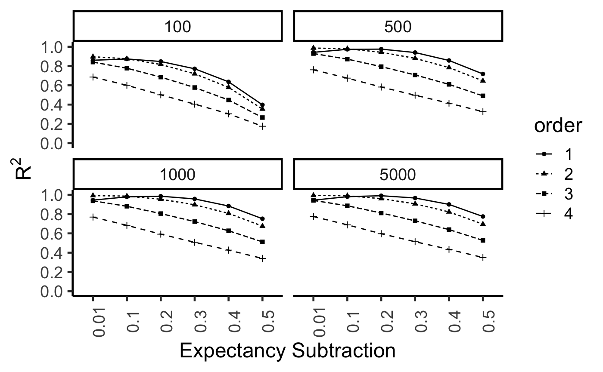

row_H <- function(x){
if(sum(x-x[1])==0) return(1)
return(-1*sum(x*log2(x), na.rm=TRUE))
}
matrix_H <- function(x){
return(mean(apply(x,1,row_H)))
}
sim_I <- function(x){
max_error <- dim(x)[1]*dim(x)[2]*4
# all ones matrix
same_error <- sum((x - matrix(1,ncol=dim(x)[2],nrow =dim(x)[2]))^2)
# identity matrix
diff_error <- sum((x - diag(dim(x)[1])^2))
return(log(same_error/diff_error))
}
higher_order_sim <- function(x,range=1:5, graph=FALSE){
if(graph==TRUE){
cor_plots <- list()
sim_save <- list()
cor_plots[[1]] <- ggcorrplot(x, show.legend = FALSE)
sim_save[[1]] <- x
}
informativeness <- sim_I(x)
for(i in range){
if(i ==1){
higher <- cosine(x)
informativeness <- c(informativeness,sim_I(higher))
if(graph==TRUE) {
cor_plots[[1+i]] <- ggcorrplot(higher, show.legend = FALSE)
higher[is.na(higher)]<-0
sim_save[[1+i]] <- higher
}
}else{
higher <- cosine(higher)
informativeness <- c(informativeness,sim_I(higher))
if(graph==TRUE) {
higher[is.na(higher)]<-0
sim_save[[1+i]] <- higher
cor_plots[[1+i]] <- ggcorrplot(higher, show.legend = FALSE)
}
}
}
if(graph==TRUE) return(list(informativeness,plots=cor_plots, sims=sim_save))
if(graph==FALSE) return(informativeness)
}frequency_matrix <- matrix(
sample(1:100,10*100,replace=TRUE),
byrow=TRUE,
ncol=100,
nrow=10
)
overlap <- matrix(0,ncol=100,nrow=10)
overlap[1, 1:15] <- 1
overlap[2, 11:25] <- 1
overlap[3, 21:35] <- 1
overlap[4, 31:45] <- 1
overlap[5, 41:55] <- 1
overlap[6, 51:65] <- 1
overlap[7, 61:75] <- 1
overlap[8, 71:85] <- 1
overlap[9, 81:95] <- 1
overlap[10, c(1:5,91:100)] <- 1
frequency_matrix <- frequency_matrix*overlap
prob_matrix <- frequency_matrix/rowSums(frequency_matrix)
veridical_sims <- cosine(prob_matrix)
nth_similarity <- higher_order_sim(veridical_sims,1:5, graph=TRUE)This piece is the function to generate sentences from the language to form the corpus.
# sentence generator function
generate_sentence <- function(num_to_make=100,
s_length_range= 4:10,
topics_to_sample = 1:10,
topic_prob = rep(.1,10),
prob_mat = prob_matrix){
all_sentences <- list()
for(i in 1:num_to_make){
sample_topic <- sample(topics_to_sample,1, prob = topic_prob)
sample_length <- sample(s_length_range)
sample_sentence <- c(sample(1:dim(prob_mat)[2],sample_length,
replace=TRUE,
prob=prob_mat[sample_topic,]))
all_sentences[[i]] <- sample_sentence
}
return(all_sentences)
}Simulation across 6 levels of discrepancy weighting (.01, .1, .2, .3, .4, and .5).
corpus <- generate_sentence(num_to_make=5000,
s_length_range= 10:20,
topics_to_sample = 1:10,
topic_prob = rep(.1,10),
prob_mat = prob_matrix)
environment <- diag(100)
## populate ITS memory
its_memory <- matrix(0,ncol=dim(environment)[2],nrow=length(corpus))
for(i in 1:length(corpus)){
its_memory[i,] <- colSums(environment[corpus[[i]],])
}
all_results <- data.frame()
for(dw in c(.01,.1,.2,.3,.4,.5)){
training <- c(100,500,1000,5000)
its_vector_list <- list()
for(t in 1:length(training)){
print(t)
discrepancy_memory <- matrix(0, ncol=100, nrow=training[t])
#discrepancy_memory[1,] <- normalize_vector(runif(100,0,1))
discrepancy_memory[1,] <- normalize_vector(its_memory[1,])
discrepancy_memory[2,] <- normalize_vector(its_memory[2,])
for(j in 3:training[t]){
probe <- normalize_vector(its_memory[j,])
#probe <- its_memory[j,]
activations <- cosine_x_to_m(probe,discrepancy_memory[1:j-1,])
if(sum(activations==0) == length(activations)){
discrepancy_memory[j,] <- probe
} else {
#activations[activations !=0] <- 1
activations <- activations
echo <- colSums(as.numeric(activations)*discrepancy_memory[1:j-1,])
# discrepancy_memory[j,]<-normalize_vector(probe-(dw*normalize_vector(echo)))
discrepancy_memory[j,]<-normalize_vector(probe-(dw*normalize_vector(echo)))
}
}
semantic_vectors <- matrix(0,ncol=100, nrow=100)
for(p in 1:100){
probe <- environment[p,]
activations <- cosine_x_to_m(probe,discrepancy_memory)
#activations[activations !=0] <- 1
activations <- activations
echo <- colSums(as.numeric(activations)*(discrepancy_memory))
semantic_vectors[p,] <- echo
}
the_cosines <- cosine(t(semantic_vectors))
the_cosines[is.na(the_cosines)] <- 0
its_vector_list$vectors[[t]] <- the_cosines
its_vector_list$plot[[t]] <- ggcorrplot(the_cosines, show.legend = FALSE)
its_vector_list$sims1[[t]] <- cor(c(the_cosines),c(nth_similarity$sims[[1]]))^2
its_vector_list$sims2[[t]] <- cor(c(the_cosines),c(nth_similarity$sims[[2]]))^2
its_vector_list$sims3[[t]] <- cor(c(the_cosines),c(nth_similarity$sims[[3]]))^2
its_vector_list$sims4[[t]] <- cor(c(the_cosines),c(nth_similarity$sims[[4]]))^2
}
nth_df <- data.frame(sims = c(its_vector_list$sims1,
its_vector_list$sims2,
its_vector_list$sims3,
its_vector_list$sims4),
training = rep(training,4),
order = as.factor(rep(1:4, each=length(training))),
discrepancy =dw)
all_results <- rbind(all_results,nth_df)
}
ITS_encoding_linear <- all_results
save(ITS_encoding_linear,file="ITS_encoding_linear.RData")load("ITS_encoding_linear.RData")
library(ggplot2)
ITS_encoding_linear$discrepancy <- as.factor(ITS_encoding_linear$discrepancy)
ITS_encoding_linear$training <- as.factor(ITS_encoding_linear$training)
ggplot(ITS_encoding_linear, aes(x=discrepancy,y=sims, group=order, linetype=order,
shape=order))+
geom_point()+
geom_line()+
xlab("Expectancy Subtraction")+
ylab(expression(R^2))+
scale_y_continuous(breaks=seq(0,1,.2))+
coord_cartesian(ylim=c(0,1))+
theme_classic(base_size=18)+
theme(axis.text.x = element_text(angle = 90))+
facet_wrap(~training)